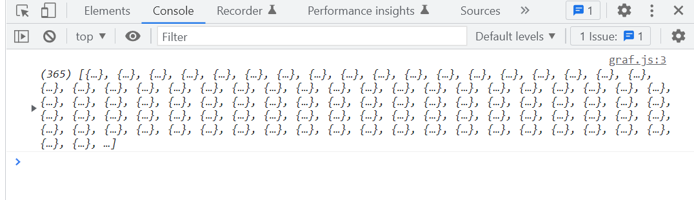
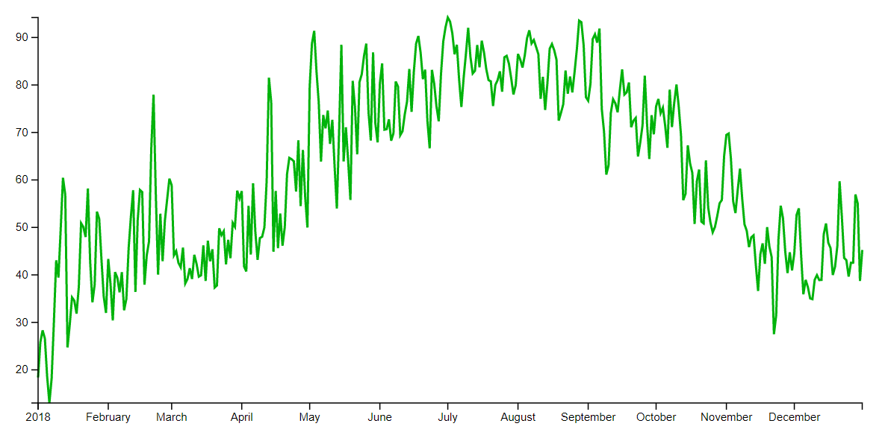
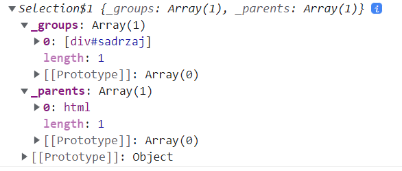
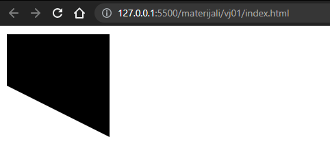
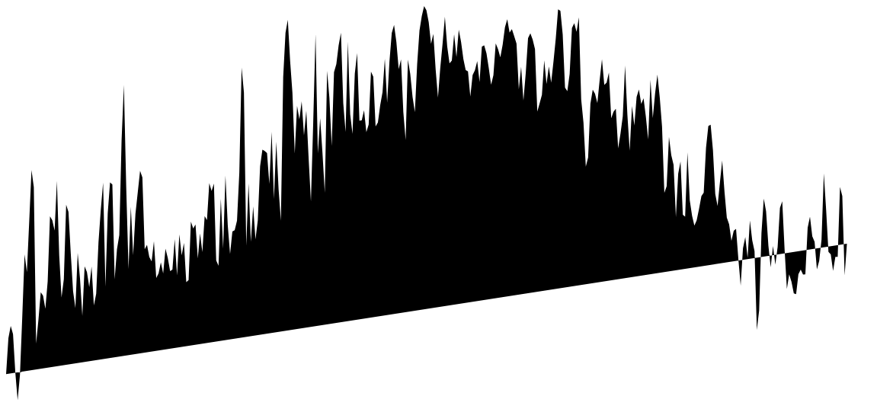
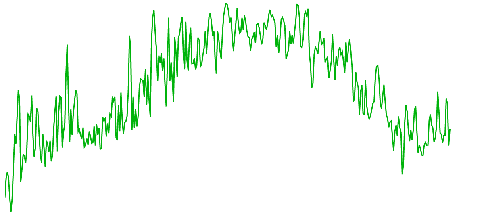
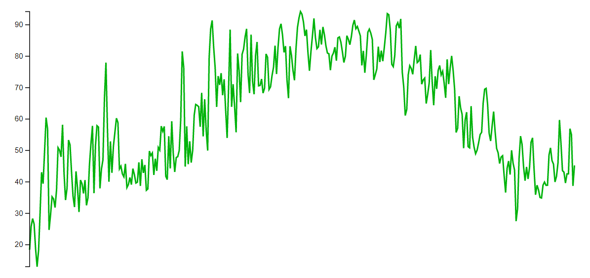
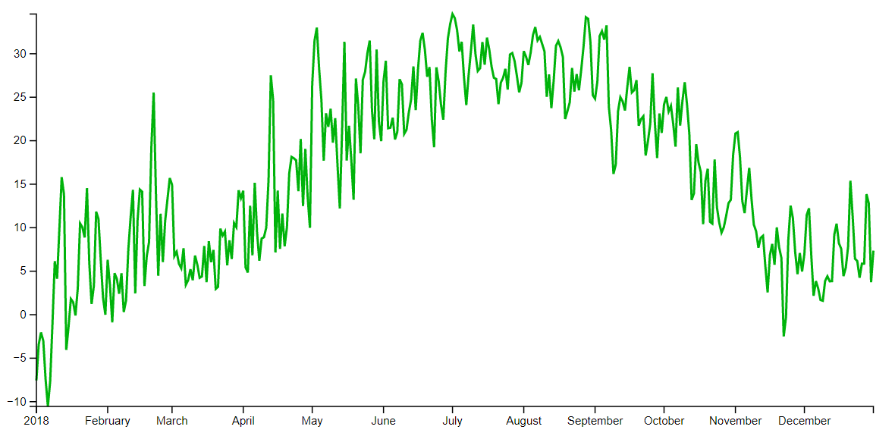
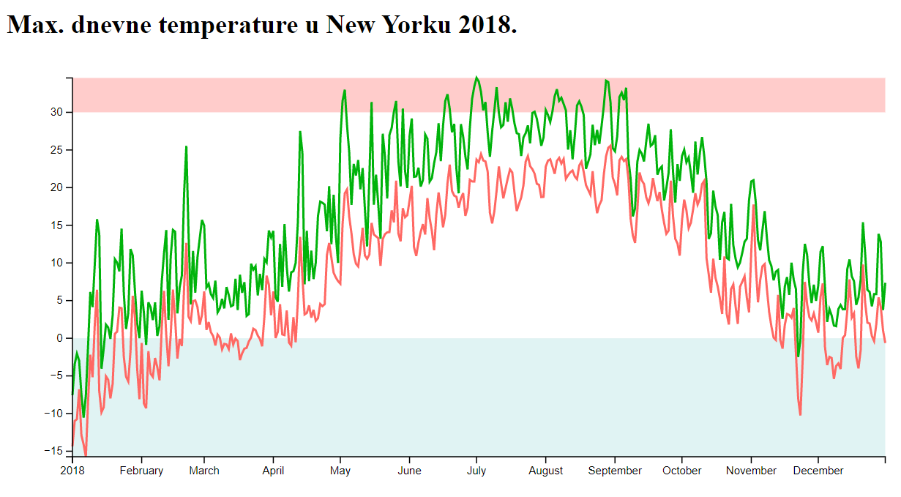

Vizualizacija podataka
Vježba 01
Vježba 01
- d3.js biblioteka ima mnoštvo modula i metoda za manipulaciju i prikaz podataka
- Krenuti ćemo odmah sa izradom jednog grafa te kroz praktični primjer naučiti osnovne metode
- Iskoristiti ćemo gotov dataset i prikazati podatke korištenjem linijskog grafikona
- Sa stranice kolegija preuzmite početni projekt koji sadrži:
- index.html - početna stranica projekta
- d3.js biblioteku (kako bi imali lokalnu i konzistentnu verziju)
- graf.js - prazna JS datoteka
- vrijeme.json - dataset za vježbu (temperature NYC iz 2018.)
Vježba 01
- Otvorite datoteku graf.js te napišite asinkronu funkciju koju ćemo koristiti za učitavanje podataka i crtanje grafa
- Pokrenite cijelu aplikaciju pomoću live server dodatka za VS Code kako bi mogli učitati podatke (inače će preglednik blokirati učitavanje lokalnih resursa)
const crtajGraf = async () => {
console.log("Test")
};
crtajGraf();d3.json()
- Odmah ćemo se upoznati sa metodom d3.json() koja je nadogradnja Fetch API-ja i služi za učitavanje podataka
- d3 podržava i druge formate datoteka za učitavanje
- Učitati ćemo naš dataset:
const crtajGraf = async () => {
const dataset = await d3.json("vrijeme.json");
console.log(dataset)
console.table(dataset[0]) // Prvi element
};
Prikaz podataka
- Naš dataset ima mnoštvo podataka - fokusirati ćemo se na maksimalnu dnevnu temperaturu (temperatureMax)
- Cilj je prikazati promjenu maksimalne temperature kroz godinu
- Graf će nam imati dvije osi:
- horizontalnu (x) - sa datumima
- vertikalnu (y) - sa max. vrijednostima temperature
- Prvi korak nam je filtriranje dataseta
- cijeli dataset možemo zamisliti kao tablicu (ili bazu) u kojoj je svaki stupac zapis za jedan dan sa mnoštvom redaka za pojedinačne meteorološke podatke
- cilj nam je "izvući" dva retka - jedan za sve datume, a drugi za sve maksimalne temperature na te datume
- napisati ćemo tzv. accessor funkcije (hrv. "pristupna")
Prikaz podataka
- Dohvat temperature iz dataseta je prilično jednostavan
- Samo moramo znati key podatka kojeg želimo dohvatiti iz našeg skupa, a to je u ovom slučaju temperatureMax
- Accessor funkcija u tom slučaju izgleda ovako
const yAccessor = data => data.temperatureMax- Podsjetnik:
- Koristimo JS sintaksu arrow funkcije koja nam dozvoljava skraćeni zapis koji bi u punom obliku izgledao:
const yAccessor = function(data){
return data.temperatureMax;
}d3.timeParse()
- Accessor za x os je malo složeniji jer je datum napisan u obliku stringa (što smo mogli vidjeti ispisom na konzolu)
- d3 ima ugrađeni modul d3-time-format koji sadrži gotove metode za parsiranje i formatiranje datuma
- Iskoristiti ćemo timeParse metodu za parsiranje datuma
// Definiramo metodu prema obliku zapisa datuma
const dateParser = d3.timeParse("%Y-%m-%d")
const xAccessor = data => dateParser(data.date)- Možemo i testirati našu funkciju za dohvat datuma samo na prvom podatku
console.log(xAccessor(dataset[0]))Prikaz grafa
- Nakon pripreme podataka možemo krenuti na iscrtavanje grafa
- Kod prikaza grafa moramo definirati dimenzije dva područja:
- okvir (wrapper) - sadrži sve elemente grafa - podatke, osi, oznake, dodatne grafike itd...
- granice (bounds) - prikaz podatkovnih elemenata (graf)

granice (bounds)
okvir (wrapper)
web stranica
(HTML)
Dimenzije
- Dobra praksa je definirati objekt sa dimenzijama naše grafike koji odgovara CSS svojstvima
- Na taj način možemo jednostavnije upravljati dimenzijama prikaza (za početak izgleda pretjerano ali dugoročno se isplati)
const dimenzije = {
width: window.innerHeight * 0.9,
heigth : 400,
margin:{
top: 15,
right: 15,
bottom: 40,
left: 60
},
}
dimenzije.boundsWidth = dimenzije.width - dimenzije.margin.left - dimenzije.margin.right
dimenzije.boundsHeight = dimenzije.heigth - dimenzije.margin.top - dimenzije.margin.bottomRadna površina
- Korištenjem metode d3.select() ćemo definirati površinu za iscrtavanje grafa
- Ova metoda prima selektore kao i CSS (id, klasa, element)
- Odabrati ćemo div koji već imamo definiran u HTML-u
- Možemo ispisati dohvaćeni element i vidjeti da je spremljen kao d3 selection objekt
const okvir = d3.select("#sadrzaj")
console.log(okvir);
SVG element
- Kada smo dohvatili radnu površinu, možemo unutar nje stvoriti SVG element i postaviti mu dimenzije
const okvir = d3.select("#sadrzaj")
const svg = okvir.append("svg");
svg.attr("width", dimenzije.width);
svg.attr("height", dimenzije.heigth)- d3 selection objekti imaju ugrađene metode za manipulaciju pripadajuće selekcije
- u ovom primjeru smo koristili apppend() i attr() metode
- većina metoda nad d3 selection objektom kao povratnu vrijednost vraća isti taj objekt (modificirani)
SVG element
- Iako je ova sintaksa potpuno ispravna d3 koristi konvenciju zapisa sa ulančanim metodama kod promjene iste selekcije
const okvir = d3.select("#sadrzaj")
const svg = okvir.append("svg");
svg.attr("width", dimenzije.width);
svg.attr("height", dimenzije.heigth)- Ako primijenimo taj oblik zapisa onda naš kôd izgleda ovako:
const okvir = d3
.select("#sadrzaj")
.append("svg")
.attr("width", dimenzije.width)
.attr("height", dimenzije.heigth);SVG element
- U prethodnom koraku smo definirali okvir cijele slike ali nedostaju nam još unutarnje granice
- Unutar SVG slike možemo samo prikazivati druge SVG elemente
- Iskoristiti ćemo nevidljivi element g (ekvivalent div elementu)
- Element g će nam poslužiti za grupirati cijeli sadržaj grafa te ga tako možemo jednostavno pomicati
- Za početak ćemo ga dodati unutar okvira te ga pomaknuti za vrijednosti margina koristeći style metodu
const granice = okvir.append("g")
.style("transform",`translate(${dimenzije.margin.left}px, ${dimenzije.margin.top}px)`)Mjerilo
- Prije prikaza podataka moramo odabrati mjerilo (scale) u kojem ćemo ih prikazati - to ovisi o konkretnim podacima
- Na y osi prikazujemo max. dnevnu temperaturu - koji će nam biti raspon vrijednosti na toj osi (grafika nam je oko 400px visine) ?
- d3 sadrži modul d3-scale koji služi za prilagodbu podataka
- Iskoristiti ćemo scaleLinear() metodu jer imamo linearno povećanje temperature
- Prilikom definiranja mjerila uzimamo u obzir dva podatka:
- domena vrijednosti - min. i max. ulazne (stvarne) vrijednosti
- raspon - min. i max. izlazne vrijednosti (za prikaz)
Mjerilo
- Moramo pronaći koje su nam min. i max. vrijednosti domene
- Teoretski bi to mogli ručno ali iskoristiti ćemo gotovu metodu d3.extent() koja služi upravo toj svrsi (prima niz i accessor)
- Rezultat ćemo proslijediti range metodi kako bi prilagodili domenu rasponu u kojem je želimo skalirati
- Konačni kôd izgleda ovako:
const yMjerilo = d3.scaleLinear()
.domain(d3.extent(dataset, yAccessor))
.range([dimenzije.boundsHeight, 0])- Sada imamo funkciju za skaliranje podataka iz domene temperatura (podaci su u °F) u raspon vrijednosti za prikaz
Mjerilo
- Napraviti ćemo mjerilo i za x os - sada radimo sa vremenskim podacima pa koristimo metodu scaleTime()
- Ostatak logike je gotovo identičan prethodnom primjeru:
const xMjerilo = d3.scaleTime()
.domain(d3.extent(dataset, xAccessor))
.range([0, dimenzije.boundsWidth]);- Napokon imamo sve spremno za crtanje grafa!
Crtanje linije
- Linija u grafu će također biti SVG element, konkretno path
- Ovaj element je sličan logo jeziku za crtanje
- Potrebno je navesti atribut "d" (skraćeno od "data") i postaviti mu vrijednosti putanje koristeći naredbe:
- M x y - pomakni se na točku (x,y)
- L x y - crtaj liniju (od trenutne lokacije) do točke (x,y)
- Z - iscrtaj liniju do početne točke
- Pokušajmo iscrtati jedan oblik na naš SVG element
granice.append("path").attr("d", "M 0 0 L 100 0 L 100 100 L 0 50 Z")
Crtanje linije
- Naravno, nema smisla da pojedinačno crtamo svaki podataka pa ćemo koristiti line() metodu (dio d3-shape modula)
- line metodi moramo poslati vrijednosti po x i y osi - imamo spremne funkcije za dohvat (accessor) i skaliranje vrijednosti
const generatorLinije = d3.line()
.x(data => xMjerilo(xAccessor(data)))
.y(data => yMjerilo(yAccessor(data)))
const linija = granice.append("path")
.attr("d", generatorLinije(dataset))
- Konačno imamo nešto iscrtano na ekranu, iako prikaz može nije kako smo očekivali
- početni stil SVG elemenata je takav da su ispunjeni (fill) i rubovi (stroke) su im nevidljivi - to ćemo sada promijeniti
Crtanje linije
- Modificirati ćemo liniju na način da ćemo ukloniti ispunu (fill)
- Također ćemo promijeniti boju rubova (stroke) u zelenu, te ćemo širinu ruba (stroke-width) postaviti na 2 piksela
const linija = granice.append("path")
.attr("d", generatorLinije(dataset))
.attr("fill", "none")
.attr("stroke", "#00b30b")
.attr("stroke-width", 2)
Crtanje oznaka
- Preostalo nam je dodati oznake za osi - za tu svrhu postoji modul d3-axis sa metodama:
- axisTop
- axisRight
- axisBottom
- axisLeft
- Prvo ćemo napraviti oznaku za vertikalnu os na lijevoj strani
- Oznaka također mora znati koje mjerilo koristimo
const yOsGenerator = d3.axisLeft()
.scale(yMjerilo)Crtanje oznaka
- Metoda za generiranje osi stvara mnoštvo SVG elemenata pa ćemo ponovno iskoristiti g element za grupiranje prije nego oznaku osi pridružimo našoj grafici
- Kako bi zadržali konvenciju ulančanih metoda koristimo call metodu za poziv naše funkcije
const yOs = granice.append("g")
.call(yOsGenerator)
Crtanje oznaka
- Na gotovo identičan način ćemo definirati i dodati x os
const xOsGenerator = d3.axisBottom()
.scale(xMjerilo)
const xOs = granice.append("g")
.call(xOsGenerator)- Ako pogledamo rezultat, vidjet ćemo da se x os prikazuje na vrhu grafa (umjesto na dnu kako očekujemo)
- Metoda axisBottom samo iscrtava liniju i natpise ispod nje - onako kako bi donja oznaka trebala izgledati - ali ne zna gdje se točno ta oznaka mora nalaziti
- Sa y osi smo imali "sreće" jer nam je početni položaj odgovarao
Crtanje oznaka
- Ponovno koristimo style metodu i pomičemo našu os za vrijednost visine granica
const xOs = granice.append("g")
.call(xOsGenerator)
.style("transform", `translateY(${dimenzije.boundsHeight}px)`)Prilagodba
- Glavni zadatak vizualizacije je prenijeti neku vrstu informacije
- S obzirom da su temperature izražene u °F od ove vizualizacije baš i nemamo pretjerane koristi...
- Srećom, cijeli nas proces izrade grafa je pravilno odrađen pa sve što trebamo je promijeniti našu funkciju za dohvat podataka
const yAccessor = data => (data.temperatureMax - 32) * 0.5556;
Prilagodba
- Možemo još malo urediti naš graf - dodati ćemo vizualni pokazatelj temperatura ispod 0°C u obliku plavog područja
- Prvo moramo izračunati gdje se po y osi nalazi granica nule
const granicaNule = yMjerilo(0);- Nakon čega možemo iscrtati pravokutnik pomoću SVG rect elementa i njegovih atributa x, y, width i height
const oznakaNule = granice.append("rect")
.attr("x", 0)
.attr("width", dimenzije.boundsWidth)
.attr("y", granicaNule)
.attr("height", dimenzije.boundsHeight - granicaNule)
.attr("fill", "#e0f3f3")*Raspored SVG elemenata po dubini ovisi o redoslijedu iscrtavanja, pa ovaj dio kôda moramo napisati prije poziva naredbi za iscrtavanje linije
Sažetak
Korištene metode:
- d3.json() - učitavanje JSON dataseta
- d3.timeParse() - parsiranje stringa u JS Date objekt
-
d3.select() - odabir HTML elementa i stvaranje d3 selection
- append() - dodavanje elementa na selection objekt
- attr() - postavljanje ili mijenjanje atributa selekcije
- style() - oblikovanje elementa
- d3.extent() - vraća [min, max] za odabrani niz
-
d3.scaleLinear()/d3.scaleTime() - linearno/vremensko skaliranje podataka
- domain() - domena za skaliranje (min i max. vrijednosti)
- range() - raspon dimenzija za prikaz podataka iz domene
-
d3.line() - generiranje linije
- x() - niz podataka za koordinate linije po x osi
- y() - niz podataka za koordinate linije po y osi
-
d3.axisLeft() i d3.axisBottom() - crtanje oznaka uz graf
- scale() - raspon vrijednosti na oznakama
ZADATAK
- Pokušajte na sličan način dodati crveno područje koje će označavati temperature više od 25 ili 30°C
- način crtanja pravokutnika je poznat, samo treba točno odrediti x i y koordinate te njegovu širinu
- koordinate (0,0) SVG grafike se nalaze u gornjem lijevom kutu
- Proučite dostupne podatke te pokušajte na istom grafu iscrtati još jednu liniju (npr. minimalne dnevne temperature)
- potrebna nam je dodatna funkcija za dohvat podataka, kao i novi generator linije prije nego je možemo iscrtati
- za pravilan prikaz podataka morati ćemo modificirati mjerilo za Y os (X ostaje isto) jer ćemo sada imati niže temperature
- ne možemo više koristiti extent metodu jer ne izvlačimo min. i max. iz istog niza podataka - srećom d3 ima upravo i takve metode - d3.min() i d3.max() pa možemo definirati domenu pomoću njih
ZADATAK
